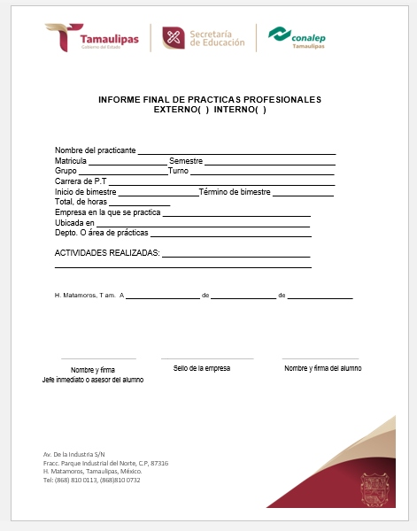
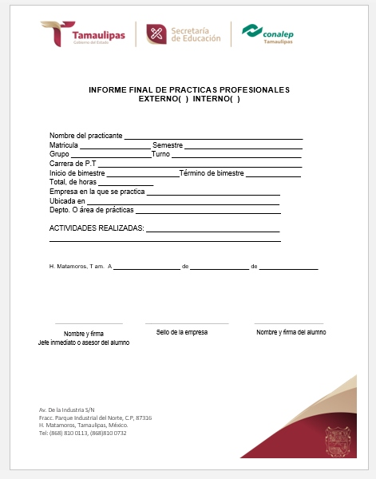

Recuerda Que:
Toda esta papelería de sebe de entregar en el área de Vinculación con la Licenciada Verónica Colmenero.
El horario de atención es de 8 AM a 4 PM.
Las prácticas profesionales duran un total de 360 horas (4 meses).
Te aconsejamos llevar un conteo de las horas que llevas en tus prácticas.
¡Saca una copia de cada papel que entregues! Es por si pierdes alguno!
Hoja del seguro
La hoja del seguro se tramita de dos formas, la primera es de manera precencial acudiendo al ims y la segunda es de manera online
-Si el alumno tiene ISSSTE o seguro social por papá o mamá. Deberá entregar a escolares una copia de la tarjeta de citas vigente.(precentar una constancia de estudios en el archivo de la clinica para actualizar tu vigencia cada semestre).
-SI NO TIENE SU HIJ(@) NINGUN SERVICIO MEDICO. DEBERÁ GENERAR UN NÚMERO DE AFILIACIÓN DEL IMMS COMO ESTUDIANTE EN LA PAGINA www.imss.gob.mx (dale click)
Dar click en acceso directo (NSS) numero de seguridad social y seguir los 3 pasos a llenar para obtener tu nss, deberás tener a la mano la curp y un correo electronico para tu asignación de número de seguro social.
necesitas imprimir la hoja que aparece en las opciones "imprimir y guardar", deberás llevar la hoja del IMMS a servicios escolares para que te den de alta y llevar el correcto archivado.
-Dudas con la Licenciada Victoria Ochoa.
El horario de atención de SERVICIOS ESCOLARES es de 7am a 3pm.
Cédula De Inscripción a Prácticas Profesionales
Primero que nada deberás dirigirte al apartado "Menú de archivos", descargar el archivo Word correspondiente y empezar a llenarlo con la información requerida, apoyate en las instrucciones de la parte superior.
Carta De Precentación
Para que puedas tener tu carta de presentación deberás de dirigirte al área de Vinculación con la Licenciada Veronica Colmenero
y pedirle la carta de presentación.
Este proceso no es inmediato por lo que tendrás que ir otro día a recogerla.
Carta de aceptación
Esta carta es entregada por la asociación o empresa con la que vayas a realizar tus prácticas profesionales, por lo que deberás exigirla.
Informe Bimestral
Para realizar tu informe bimestral deberás dirigirte a la sección "menú de archivos" de esta página y descargarlo haciendo clic en el Menú de archivos y después en Informe bimestral.
Posteriormente deberás empezar a llenarlo con las instrucciones de la parte superior de la página, al haber terminado deberás de imprimirlo y entregarlo en el área
de Vinculación con la Licenciada Veronica Colmenero.
Informe Final
El informe Final se descarga en la sección "Menú de archivos" de esta página, al descargarlo deberás proceder a responderlo con las instrucciones de la parte superior
de esta página, cuando finalmente lo hayas llenado de la manera correcta podrás imprimirlo y entregarlo en el área de Vinculación con la Licenciada Veronica Colmenero.
Carta de Término
Esta carta te la entrega la empresa o asociación donde hayas realizado tus prácticas profesionales, al concluir tus 360 horas, podrás pedirla y posteriormente entregarla
con la Licenciada Veronica Colmenero.
¡Y con esto habrás concluido tus prácticas profesionales!!!!


.jpg)
.jpg)


.jpg)

.jpg)


 
